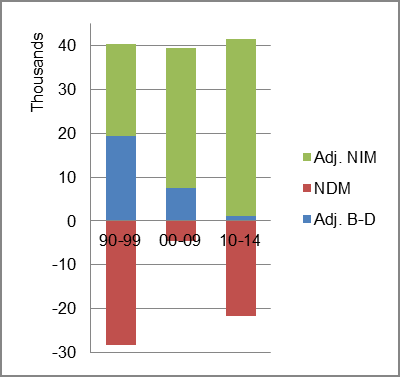
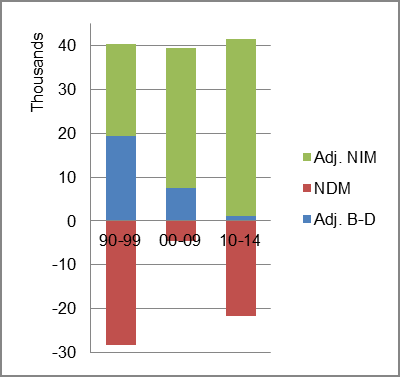

The foreign-born (FB) population increased from 603,490 in 1960 to 739,068 in 2010. That was an increase of 22.5 percent. The foreign-born share increased from 5.3 percent to 5.8 percent.
The share of the overall population that was native-born (NB) increased by 11.6 percent.
Pennsylvania: Population 1960-2010
The first chart below shows the three population change factors for three periods adjusted for annual average amounts. Domestic migration (NDM) was consistently negative and the principal factor adding population changed from B-D in the first period to NIM in the latest two periods.
The second chart shows the same data but with an adjustment to reflect births to immigrants shifted to NIM. In it, NIM rose from being a bare majority of population increase in the unadjusted data to a large majority in the adjusted data; becoming nearly the sole factor adding population in the most recent period.
Pennsylvania: Sources of Population Change 1990-2014 Pennsylvania: Sources of Population Change (Adjusted) 1990-2014
B-D NDM NIM B-D NDM NIM 90-'99 70.6% neg. 29.4% 90-'99 48.3% neg. 51.7% 00-'09 48.6% neg. 51.4% 00-'09 18.8% neg. 81.2% 10-'14 35.5% neg. 64.5% 10-'14 2.5% neg. 97.5%